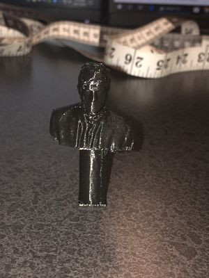
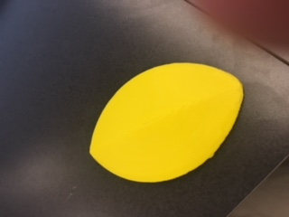
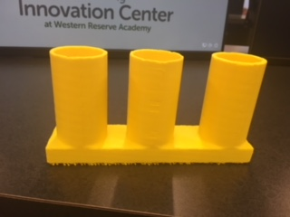

For this rotation, we got introduced to 3D printing and meshmixer. We got our faces scanned and we put it into the meshmixer software and I put a column below my scanned torso and I put this into the makerbot print software and from there I set the up the design for the 3D printer and printed it and it came out pretty good. Then for my hollow object I decided to make a paperweight kind of design and so I thought a design that would be a good idea for it and I thought of it and I put it into autodesk and then into meshmixer to make the design hollow which I then put into the makerbot print software then I put into a flashdrive after putting the approiate settings to print it where I then printed it and it came really well and it is really useful. Then for my useful object, I made a pencil holder by making the design in autodesk and I fixed the details in meshmixer then I put the file in makerbotprint which allowed me to print the design and it came out perfectly and it is really useful and helpful. However, I was not able to put my meshmixer file for my head scan because the file was too big, but I was able to put the files for my pencil holder and hollow object.
  